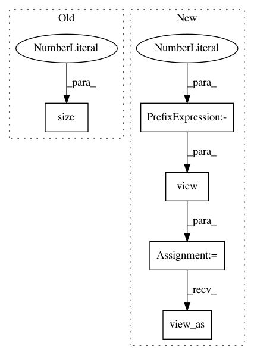

91b0d220c8e816766fd4565e1d2f5115d3afbefe,gpytorch/utils/cholesky.py,,batch_potrs,#Any#Any#,19
Before Change
potrs_list = []
for i in range(mat.size(0)):
potrs_list.append(torch.potrs(mat[i], chol[i]).unsqueeze(0))
return torch.cat(potrs_list, 0)
After Change
potrs_list = []
potrs_list = [
torch.potrs(sub_mat, sub_chol)
for sub_mat, sub_chol in zip(mat.view(-1, *mat.shape[-2:]), chol.view(-1, *chol.shape[-2:]))
]
res = torch.cat(potrs_list, 0)
return res.view_as(mat)
def tridiag_batch_potrf(trid, upper=False):
In pattern: SUPERPATTERN
Frequency: 3
Non-data size: 5
Instances
Project Name: cornellius-gp/gpytorch
Commit Name: 91b0d220c8e816766fd4565e1d2f5115d3afbefe
Time: 2018-10-12
Author: gpleiss@gmail.com
File Name: gpytorch/utils/cholesky.py
Class Name:
Method Name: batch_potrs
Project Name: cornellius-gp/gpytorch
Commit Name: 47413b25d8afac276e6144bc05b1d349c28c536b
Time: 2018-10-10
Author: gpleiss@gmail.com
File Name: test/lazy/_lazy_tensor_test_case.py
Class Name: BatchLazyTensorTestCase
Method Name: test_inv_matmul_matrix
Project Name: cornellius-gp/gpytorch
Commit Name: 91b0d220c8e816766fd4565e1d2f5115d3afbefe
Time: 2018-10-12
Author: gpleiss@gmail.com
File Name: gpytorch/utils/cholesky.py
Class Name:
Method Name: batch_potrf